1月から11月まで、月に一枚ずつ選んだ写真を持って、北海道・東川町へ。11枚を並べて一年をたどり、冬のまちを歩いて、いまの自分の目が何に止まるのかを確かめる2泊3日です。
北海道・東川町／2泊3日／59,800円
LINEグループに入る＊写真はすべて2026年8月21〜23日に開催した第1回の記録です。12月は雪の東川になります。
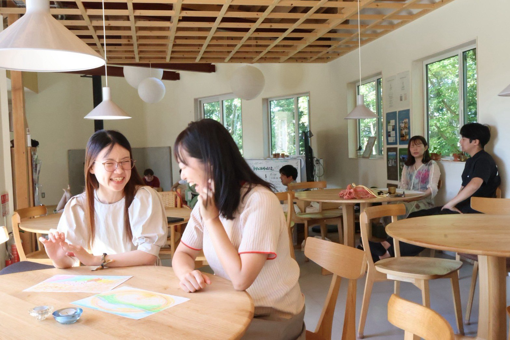
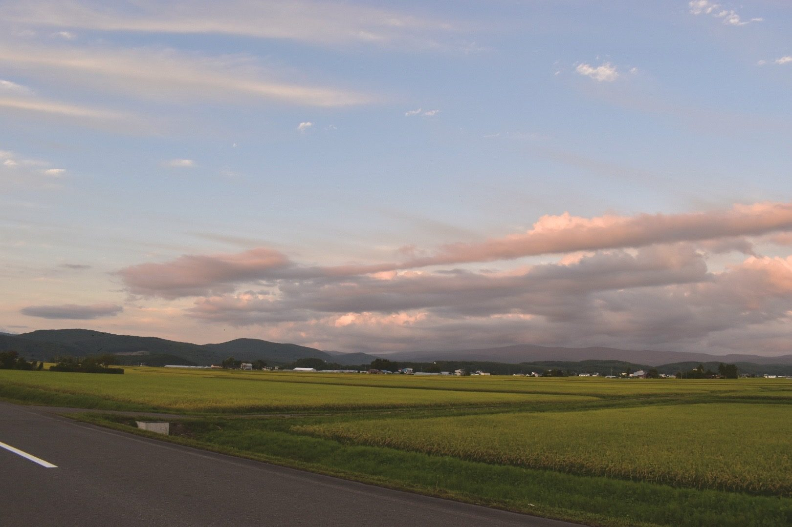
年始に決めたことを、もう思い出せない。
夏が終わって、今年も残り4ヶ月だと気づいた。
去年の年末も、気づいたら年が明けていた。
立ち止まる時間は、いつも「落ち着いたら」になる。
年末に立ち止まる時間は、年末になってからでは取れません。
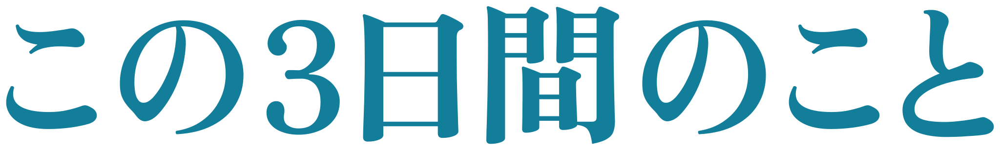
次の目的地を決める前に。
2026年を、綴じて、紡ぐ。
一年を振り返るとき、あなたは何をしますか。手帳を開いたり、カメラロールをさかのぼったり。ただ、それを年末の慌ただしい数日でやろうとして、結局そのまま年を越してしまう、ということが起きがちです。
この3日間でやるのは、その作業です。1月から11月まで、その月を思い出す写真を一枚ずつ選んで持ってきてもらい、11枚を並べながら、どこで誰といて何に時間を使っていたのかを思い出していきます。翌日は冬のまちに出て、いまの自分の目が何に止まるのかを、もう一度写真で確かめる。過去に撮った写真と、これから撮る写真。手がかりは、この2種類だけ。
3日目の終わりに持ち帰ってもらいたいのは、次の一年で大切にしたい方角と、まだ答えを出さずに持っておきたい問い。それぞれひとつかふたつあれば十分で、来年の目標が決まっていなくても構いません。綴じるのは2026年で、紡ぐのはそのあとです。
いまはまだ9月なので、振り返りの話をされても気が早いと感じられると思います。それでも募集を始めているのは、12月の週末と旭川空港行きの便が先に埋まっていくからで、もうひとつ、この3日間には申し込んだ日から始まる部分があるからです。次の「事前準備」に書いた、11枚のことです。
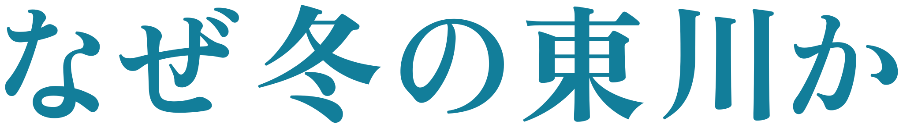
写真の町で、
写真からはじめる。
北海道のほぼ中央、大雪山国立公園の麓に東川町があります。人口はおよそ8,400人。上水道がなく、8,400人全員が地下水で暮らしているまちで、家具をつくり、移住してきた人と元からの住民がゆるやかに混ざり合っています。そして東川町は「写真の町」を名乗っていて、初日はその成り立ちにも触れます。
写真をテーマにするなら夏でもよかったはずですが、12月にしたのは、冬になると見えるものが減るからです。雪が積もると景色の情報量が落ち、外を歩く速度も自然とゆっくりになる。寒さがあるぶん室内と外の行き来が生まれ、薪ストーブと食事と共同生活の時間が、夏よりずっと一日の中心になっていきます。白い景色のなかでは、何かが目に入ることそのものが少ない。それでも目が止まったものには、意味があるはずだと考えました。
これは仮説で、まだ確かめていません。12月の東川で、11枚を持ってきた人がその日どこにレンズを向けるのか。そこがこの回でいちばん見たいところです。
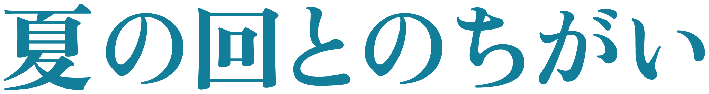
会場も日数も8月の第1回と同じですが、狙いは反対のほうを向いています。
8月に同じ校舎で3日間を過ごしてみて、ひとつ思ったことがあります。POOLOに集まる人は、話すことや自己開示の最初の一歩が得意な方が多い。そのぶん、そこから先の、深く自分と向き合って対峙するところは、無意識に避けてしまうこともあるのではないか。夏が東川に出会うところから世界の広がっていく3日間だとすれば、冬は東川を使って自分のほうを見る3日間にしたくて、時間の多くをそこに置きます。

事前準備
出発の前に、
2026年の11枚を選ぶ。
選ぶ基準はひとつだけ。「その月を思い出す一枚」であること。
このコースは、出発する前から始まります。1月から11月まで、それぞれの月から1枚ずつ写真を選び、事前にアルバムへ入れておいてください。
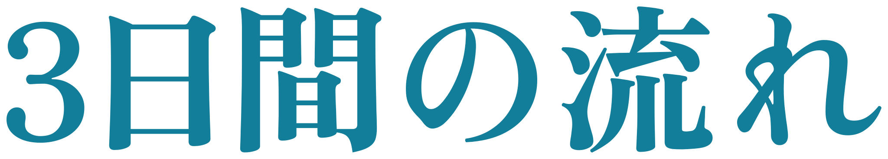
12月4日（金）
歩いてきた一年をたどる。過去の写真から、一年を振り返ります。

12月5日（土）
いまのまなざしを写す。東川を歩き、今の自分が惹かれるものを見ます。

12月6日（日）
2026年を綴じて、次の一年を紡ぐ。2日間を振り返り、対話します。

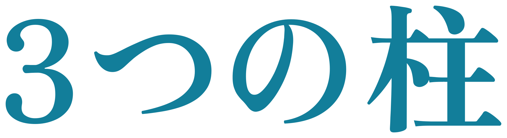
体験するカメラを持って、冬の東川を歩く向き合う自分と深く向き合う

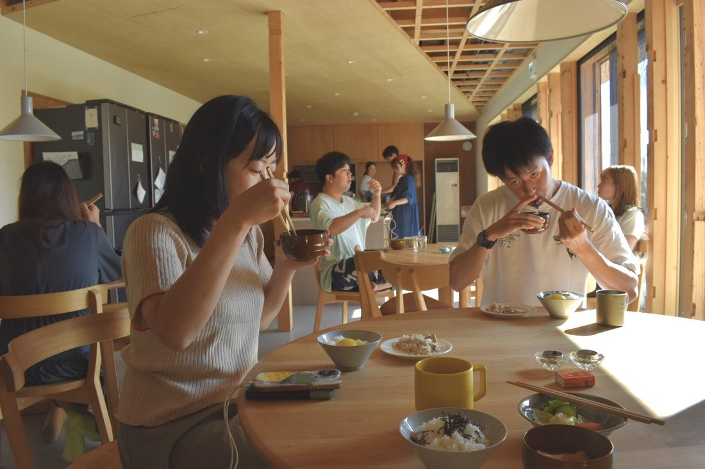
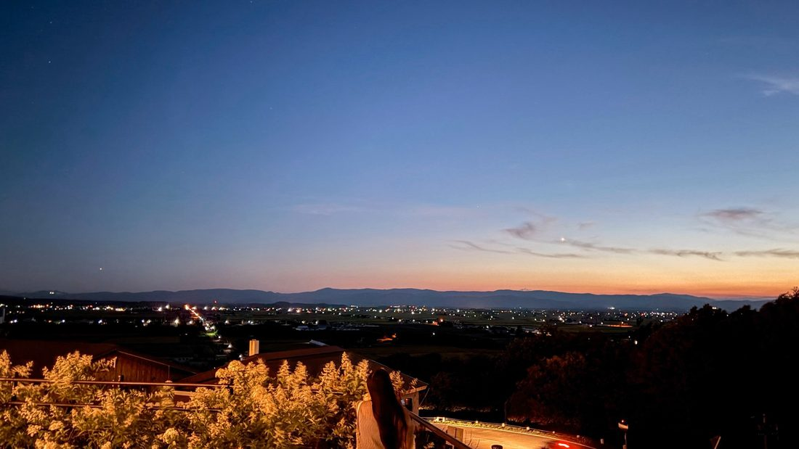
8月の3日間は、こうでした。写真はすべて2026年8月21〜23日に開催した第1回の記録です。12月は雪の東川になります。

3日目の終わりに持ち帰ってもらいたいのは、次の一年で大切にしたい方角と、まだ答えを出さずに持っておきたい問い。それぞれひとつかふたつあれば十分で、来年の目標が決まっていなくても構いません。
第1回を終えたあとのアンケートから、そのまま引いています。冬とは中身の違う3日間ですが、この校舎で何が起きていたのかは伝わると思います。

8月の回・参加者
「自分の強さと弱さを受けとめる3日間。得意な部分が見つかるワークもあり、逆に自分の言葉で表現が難しかった時間もあり、どちらも同時に味わったことで、自分を広く見て受け止めてる時間を過ごすことができた。」
8月の回・参加者
「何のために生きるのかを考えさせられた3日間でした。多くの方の価値観に触れ、自分で人生を決めている皆さんから自分が日々なんのために生きるのかを考える機会を貰えたから。」
8月の回・参加者／いま残っている問いとして
「私にとって「心地よい場」って、結局どんな場なんだろう？ 自分でやりたいことを選んで、必要なときには人を頼りながらも結局それぞれが自分らしくいながら自然につながれる場が「心地よい場」なのかもしれない。」
8月の回・参加者／東川から帰ってやってみたこととして
「ロウソクを家に導入した！」
＊2026年8月21〜23日に開催した第1回のあと、参加者ご本人が書いてくださったことばです。手を入れずにそのまま引いています。ご本人が特定されない形で掲載しています。
こんな方へ
今回は、向かないかもしれません
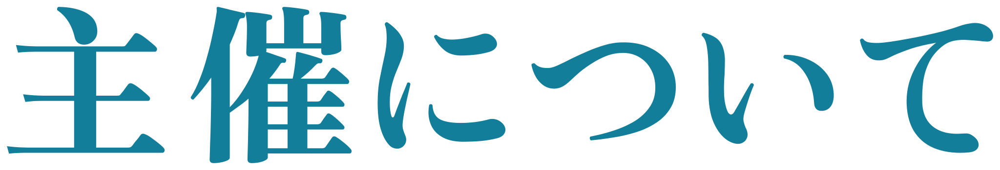

あたらしい旅の学校 POOLO は、旅を入り口に自分の生き方と働き方を問い直す大人の学び場として2019年に開校し、世界中を旅する20〜30代が全国から集まって、いまは1,200名以上が関わるコミュニティになりました。POOLOには問いを持って、世界や人生に向き合うという文化があります。
School for Life Compath は、北海道・東川町で人生の学び舎をつくっています。下敷きにしているのはデンマークのフォルケホイスコーレ、試験も成績もない全寮制の学校です。コンセプトは「私のちいさな問いから社会が変わる」。立ち止まって余白を取り、自分と社会について問い直す場を、個人にも法人にも地域の人にも開いています。
この二つは、大学の同じゼミの出身です。10年以上が経った2026年8月にはじめて共同で3日間を開き、定員15名が満席になりました。今回はその第2回を、季節と、問いの立て方を変えて行います。
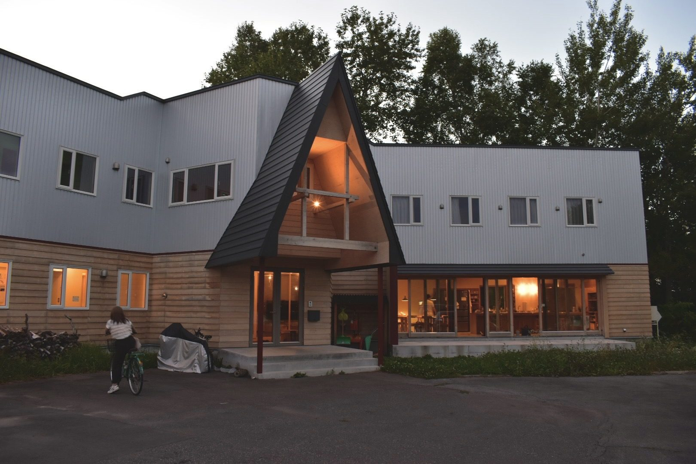
主催：POOLO（CODOLI）／ School for Life Compath
12月上旬は、雪が降りはじめる頃です。積雪量は年によって異なるため、掲載している写真と風景が異なる場合があります。またプログラムはいま設計中で、参加に興味を持ってくださった方の声も聴きながら、このページを書き換えていきます。
12/4（金）〜6（日）、雪の東川へ。年末の3日間を、いまのうちに空けておいてください。
北海道・東川町・2泊3日・59,800円（税込）
LINEグループに入るまずは LINEグループにご参加ください。募集開始・詳細はグループでお知らせします。